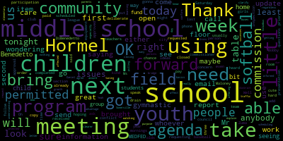

AI-generated transcript of Medford School Committee meeting April 1, 2019
English | español | português | 中国人 | kreyol ayisyen | tiếng việt | ខ្មែរ | русский | عربي | 한국인
Back to all transcripts
[Unidentified]: Order! The Secretary will call the roll.
[Burke]: Presidents of the President, none absent, all please rise and salute our flag. I pledge allegiance to the flag of the United States of America and to the Republic for which it stands, one nation, under God, indivisible, with liberty and justice for all. Approval of the minutes of March 18, 2019. Motion to approve by Ms. DeRusso, seconded by Ms. Kreatz. All those in favor? Aye. All those opposed? Motion passes. Approval of bills, transfer of funds, and approval of payroll. Motion to approve by Ms. Kreatz. Mr. Benedetto?
[DiBenedetto]: We didn't get a hard copy of that, and we usually do. I didn't have a chance to look through that at all. If there's any questions, can I ask them at the next meeting? Would you like to table it? No, I'm sure they need to be approved to be paid, right?
[Unidentified]: No.
[DiBenedetto]: Oh. Do you need approval tonight to pay those? OK. And if the, no.
[Burke]: They've already been on the wall.
[DiBenedetto]: OK, so can we table that so we can just look at them before we?
[Burke]: Motion to table by Mr. Benedetto, seconded by Mr. Giro. All those in favor? Aye. All those opposed? Motion passes. Thank you. Report of secretary. None? None. Report of committee. None? Community participation, Mayor Burke.
[DiBenedetto]: Ms. DiBenedetto. Thank you. I'm hoping if there's anybody in the community that needs to speak first, but I've received a few phone calls and emails about a few issues and I'd like to bring them up under this community participation section.
[Burke]: If there are issues that the school committee needs to deliberate on and it's not of emergency nature, it needs to be on the agenda.
[DiBenedetto]: Well, I could at least bring up the ideas that were brought forward to me so we can put them on the agenda for next week and deliberate at that time, so at least they're brought forward. First was a concern about the gymnastic floor, and I'm requesting an update on that. I heard that there was some kind of presentation at the city council meeting last week, and that there was a work order requested for either the floor or some equipment, and that Because of what was said at that meeting, the gymnastic room has been closed. And we're not using it as a school. And community schools aren't using it. So the little cute little three-year-olds I see when I go to Zuma on Saturday mornings aren't there and able to use it. So I'm just wondering if an inspection has been completed. It's scheduled for this week. OK. And so could we get a follow-up at our next meeting of where we are? maybe even an email if that's able to open prior to our next meeting, that would be great. So I'd like to add that to the next agenda. The other item is, I got a call about using drain fields for our middle school children for softball, and that the field is gonna be permitted to the middle school And there might be some conflict with the youth baseball program. If anybody has some information on that, is our middle school?
[Burke]: It's a Hormel committee. It's with the Hormel Commission, the permitting of that field. Right, but they said that it was- And it's girls softball. It's not a middle school softball program. It's actually girls youth soccer 12-year-old program.
[DiBenedetto]: So it's girls youth softball using it, because the information I got today that it was the middle school club or middle school was using it for a youth softball team in that they were permitted the use of it after the youth little league already got permitted for that. So if maybe we could get a report from either the middle school teachers or the Hormel commissioner, or whoever, if Bobby Maloney is the person who takes care of the Hormel, or whoever takes care of scheduling it. Hormel commission. Yeah. Hormel commission. If they could report to us at our next meeting and confirm that it's not through the schools, it's through. The youth programs, just to clarify because I was informed today that it was under the middle school program.
[Burke]: I was advised last week it was the girls youth soccer program, I'm sorry, softball program that petitioned. So one field is girls youth, one field is the little league, and there's also time allotted for t-ball and what's the little t-ball, farm league.
[DiBenedetto]: So could we have the commission come forward and just assure us that or send us a letter saying that It has nothing to do with the school district pulling permits for that field. So that's my second request for the item for the agenda for next week. And I just was wondering if there were any issues with the traffic due to the bridge closing in Somerville. Any updates on how that affected our Columbus school parents and our children on buses getting to and from school?
[Burke]: So if we could have the- We can't take action right now, You have to write your items to get on the agenda. We can't take any action right now. So this is, yeah. We have an item, someone wanted to move on to suspension? Yes. Motion for suspension? Yes. By Ms. Mastone, seconded by Ms. Kreatz. All those in favor? Aye. All those opposed? Motion is granted. And you wanted to take paper. We have a paper on the suspension. It just came up, I believe, in the past day. It's for, where is it? An anonymous donation has been offered to Medford High School's ethics team in the amount of $300. I'm requesting that the school committee accept this anonymous donation of $300 on behalf of the team. The donor's intent is for the money to be used to transport students on the team to and from the airport. Ms. Caza.
[Chiesa]: just going to say, so I'm just, I am requesting approval for this gift from the parent.
[Burke]: Second. Okay, there's a motion to approval by Ms. Maniclude, seconded by Ms. Kreatz. Roll call vote, please.
[Mustone]: Yes.
[Burke]: Yes, seven in the affirmative, zero in the negative. Motion passes. Thank you very much. Good luck. Good luck, everyone. Thank you.
[Chiesa]: They're very, very excited for this. Thank you for all of your support. I will extend it to the anonymous donor. Thank you. Thank you very much. Hopefully I'll be back with an update on their success.
[Burke]: Yes. Thank you.
[Chiesa]: We look forward to that.
[Burke]: Okay. Motion to revert to the regular order of business by Ms. Mustone, seconded by Ms. Kreatz. All those in favor? All those opposed? Motion passes. Superintendent's update and comment. First off, I would just like to tell everyone here and in TV world that Ms. Dr. Maryse Edouard-Vincent's aunt passed away. Therefore, she is not at this meeting tonight and she's handling the items for her family. Ms. Caldwell.
[Caldwell]: Thank you. So I'm speaking on behalf of Dr. Vincent. So we're going to be talking about MHS junior Albert Farah. selected to represent Massachusetts at the International Science and Engineering Fair. So we're pleased to announce that Albert, who is in the class of 2020, has been selected as a Massachusetts delegate to the International Science and Engineering Fair. His project was modeling mass flow distribution in multi-stage rocket concept design. This year the fair will be held in Phoenix, Arizona. from May 12th to the 17th. This is a very impressive accomplishment. He is the third student in less than 10 years to qualify for the ISEP from Medford. The previous delegates were Erica Budina, who was in the class of 2014, I'm sure you all remember, and Ann Lee in the class of 2017. All three of these students worked in conjunction with Tufts University to develop or refine their research. We appreciate our partnership with Tufts University. Albert first attended the Brooks Elementary School, then the McGlynn Middle School prior to attending Medford High School. Congratulations to Albert. So the Andrews Middle School students did a cleanup this week. On the first day of spring, the Andrews Middle School students decided to begin cleaning around school's green space. Over 500 students cleaned around the Mystic River walking path and other areas surrounding the school. The students did a great job of raking, picking up trash, and clearing twigs and branches. We appreciate the assistance of Mike Nestor of the Medford DPW for providing supplies for the cleanup and carting away the debris. So thanks, Mike Nestor. So the Medford Family Network's major fundraiser of the year, 10,000 Lights, will be held here at City Hall on Saturday, April 6th at 7 p.m. This is an incredible event for all to attend, so I encourage you to come. This is fabulous, to support the many programs and projects offered to our families by Marie Cassidy of our Medford Family Network. So please come this Saturday. The middle school lottery update. Last week we had the opportunity to meet with the fifth grade parents of all the elementary schools to address their concerns about the middle school lottery, and we appreciate that parents took the time to meet with the team here. We had approximately 110 5th grade parents combined at all of our elementary schools. We feel that it alleviated a lot of the stress that parents had and were feeling, and we hopefully addressed their concerns. The lottery itself will be handled by an independent company. Obviously we will not be hosting open houses, but rather welcome orientations at the middle school in May. We want to announce again important dates that parents want to be aware of regarding the lottery process. So tomorrow, Tuesday, April 2nd, sibling opt-in forms will be sent home with the fifth grade students, and Dr. Riccadeli has been working on that. On Tuesday, April 9th, the sibling opt-in forms are due back. On April 19th, we have vacation week from the 15th to the 19th. Tuesday, April 23rd, each fifth grade student will receive a lottery number. And on Tuesday, April 30th, between 3 and 4 p.m., the lottery will take place in the Medford High School Library. So parents and families are welcome to attend. If they want to bring their children, they may also bring their children. The orientation dates for the middle schools will be held on the following dates. So this is following our lottery. The McGlynn and the Andrews will then have orientation. On Wednesday, May 8th, will be the Andrews Middle School orientation, and on Tuesday, May 14th, the McGlynn will have their orientation as well. The time for both schools will be 6 to 8 p.m. So we would like to extend our thanks to everyone who was included in helping out with the lottery. Our Director of Instruction, Dr. Bernadette Riccadeli, Director of EL Paul Texera, Director of Pupil Services Kathy Madaglio, and all of our elementary principals, we have Suzanne Galuzzi at the Brooks School, Dr. Kathleen Kaye at the Columbus School, Ms. Diane Garino at the McGlynn, and Mr. Kirk Johnson at the Roberts Elementary School, along with Emily Lazzaro and Lisa Evangelista. Thank you so much. This Thursday, April 4th, the Medford Vocational Technical High School will host its CTE Grade 9 Showcase, which will enable students to discuss options for next year with Medford High School administrators and make selections for courses for next year. Last Thursday, family nights were held at both the McGlynn and the Columbus elementary schools. Our math coaches, Grace Basile, attended the McGlynn, and Elio Leary attended the Columbus night. It was really a fun-filled night. I attended both events. There were parents, teachers, kids playing games together at the schools. Speaking of math, the Pathways to Mathematics presentation has been planned for Thursday. April 11th for 6th grade parents from 630 to 730 in room B310 at Medford High School. Our math director, Faiza Khan, will discuss shifts in middle school mathematics education, the impact of mathematics curriculum on high school decisions, and the opportunities for middle and high school mathematics courses. We encourage all 6th grade parents to attend. And please don't forget, Medford's Credit for Life Financial Literacy Fair will be held in the MHS and BU DHS junior class on Friday, April 5th. And that is something that I think everyone should attend. I know some of you went last year, but it is something to watch the students know they have so much money to spend. And I know that Christine Patterson, everybody goes to her to see if they have enough money or do they have to refinance. They have to think about whether they can live in an apartment, a condo, have a car, take a bus to work. And sometimes when that doesn't work, they have to go back and figure out what to do. Maybe they have to live with mom and dad or something. But it's something for people to attend. I know Lisa was telling me earlier today, we have 65 volunteers coming. So without those people, we wouldn't be able to do this. So come one, come all this Friday. Thank you.
[Burke]: Thank you. Thank you very much. Item 2, report, Center for Citizenship and Social Responsibility Update. Mr. Richard Trotter and Mr. Michael Skorka. Good evening.
[Trotter]: Good evening. Richard Trotter, director of the CCSR. It's an honor to be here. It's with a great deal of pride that I present this report. As you know, you received a copy. It's 70 pages long. In the interest of time, I'm only going to read the first 35 pages. Once again, it's great to be here. Thank the school committee and the mayor because of your support. Without your support in terms of financial and otherwise, we wouldn't have the great program that we have. Having Michael Skorka work with us on this project and spare the high school Having the schedule that allows that to happen makes a great big difference. And so I really want to thank you for supporting us. I also want to mention that we are supported by several of the organizations around us. Tufts always helps out a great deal. The Kiwanis and the Rotary, whenever we have some fundraising going on or trying to do an activity, they step up and help us. And we were there last week, and they gave us a donation. So that was the Kiwanis. So we're really thankful for the support in the community. I also want to thank Superintendent Vincent, Associate Superintendent Caldwell, and Assistant Superintendent Patterson for their support, because central office is critical. And also all the principals, because as we will talk about, we are now in every school, and the principal's support is really important. So we want to thank them too. So the first point I want to make is that we now have advisors in every school building this year, first time. So every school has a leadership program operating. I'm not going to say much about that because Michael's going to talk about that, but he's the key person in that operation. Based on his experience and his knowledge and also his spirit, he's the right person to run that program. So some of the highlights, just quickly, we have many grants that we distribute. I'm not going to talk about all of them, but one of them I want to point out was done by Andrew Milam, a teacher at the high school. He got a mini grant, and what he did was he arranged with the Arlington Theater to host parents and students from the AP history class. And actually, one grandparent showed up. And they watched the movie Green Book. And after the movie, they had a discussion about racism. And that was one of the things that Andrew did. And he also is going to do another one coming up. I think it's on Solo, the one, the climber, the rock climber. So he's going to bring in different aspects about society, and he's done a great job. And he's done, this is his second year doing that. So that's an idea of what a main grant is like. So teachers can use funds from our budget to do projects inside the classroom. So that's a different aspect than just the advisors. We also had a walk for veterans when the mayor helped sponsor with us, and we raised $3,000. It's going to go to local veterans services. And so we're very happy with the people who supported us. And we had a good, decent turnout. But it was a memorial day, and it's the first time. And so we hope to do it next year, too. So that's coming up. We also took some of the Crystal Campbell funds and set up a SAFE project at the high school, middle school. SAFE stands for Students Advocating for the Earth. And we think it's very important that the environment is a key focus of education and above politics. So we're trying to stimulate students and parents and people in the community to think about the environment, to care about the environment. We had a couple guest speakers. We had David Flood at the Andrews, who's a speaker about students being empathetic, also having respect and compassion for others. And that was a big success. Nick Tucci coordinated at the McGlynn, and it was the second year of doing that, and that was well received. Coming up, we have Dr. Chopra. going to the McGlynn again with Mr. Tucci for the students and the parents at night. Dr. Chopra is not Deepak Chopra. It's his brother, who's a surgeon at Harvard. He's the director of surgery at Harvard Medical School. But he has written 10 books. And he's an expert on a number of things. But he's going to talk about leadership with the students and the parents. 6.30 on May 29. So May 29th is the date. During the day it will be at 9.30 if you're around, but at night it will be 6.30 at the McGlynn. It's open to anyone who would like to go. This year I instituted an internship at Tufts University. We have nine interns. We just started to do that now, so we're in the early stages. But they'll be helping with student projects. They're helping do things like research projects. one of the students write a report on self-esteem and how important self-esteem is. In fact, I would like to forward you some of the research reports at a future date, because we've done like three or four of them now. And they're short and brief, and they're very understandable for lay people, and not the human people. We're not psychologists, so it would be easy to read. Also, they're developing things like databases and so forth, keeping a database of resources that apply to what we do. For instance, compassion, empathy, project-based learning, community service. And the last point, we applied to be part of the Mass. Association of Superintendents Executive Institute in July, and we were selected. So if you're going to be at that institute, you'll see us there. So the CCSI will have a presence. Not quite sure what we're doing yet, but I think we're doing either a workshop or a table. But we will be there in the summer. So we look forward to seeing you there. And that's it for my report. I promised Diana I would be brief. I just wanted to introduce Michael. And Michael, as you know Michael, he will be talking more about the different projects each building is doing and the building-based program, which If you had to pick one of the essential things that we do, it's the building-based program, because we're creating not just projects, but student leaders as well. So without further ado, we'll take questions afterwards. Without further ado, Michael Skorka.
[Skorka]: Thank you for the applause. I will try to keep this brief. So I just want to start off by saying to thank you to all of you for being so supportive of the program. This is a journey that has been one of the best journeys of my career, and it's so wonderful to work besides these children who are really awe-inspiring and just really make the world a better place. Like I said, if you give them the space to be creative. They not only meet your expectations, they significantly exceed them, and I always say that, and that proves true every single year. This year we have approximately 400 students participating in the program district-wide. Since our last presentation, Curtis Tufts has joined the CCSR, and Mary Montero is the advisor at that school. We meet every single month to collaborate with one another, to bounce ideas off of one another, Some have just started their program this year, where others are already one year in the program, so it really is helpful to have that time to collaborate with one another, which has been great. This is the project fair season, so I want to give you the date of the high school project fair, where I hope you can come. It's April 25th. That's a Thursday from 2.30 to 4 at the high school. All of the other schools in the district are also going to have project fairs this year. They are working on those dates, so I don't have all of those to give to you right now, but I will email you by next week with all of the dates for the project fairs for the other schools. That includes the Curtis Tufts as well. They're very excited. With that being said, I also want to focus on a couple highlights over the past couple of months that the CCSR has had. Some of you were able to attend the Mustang Way Assembly that we put on. It was a collaboration between the high school and the middle school. Nick Tucci and I sat down, and we thought it would be a great idea to get the high school over to the middle schools, and we created this assembly called the Mustang Way, which promoted respect and kindness and acceptance. a ton of speeches, and I know some of you attended. It was really well received by the faculty, students, and staff at both middle schools. And so that's something we hope to continue for next year. And I want to say thank you to everyone who attended. Again, I know Ms. Massone and your daughter spoke at the Andrews. She was fabulous. And she was amazing. She was so wonderful. She's such a bright light, so we're very lucky to have her. Also, and I'm going to read this part because I don't want to get anything incorrect, but last Monday, CCSR and students advocates for Earth members Evian Abshire, Audrey Sol, Rachel Klein, and Katie Stefani won a grant from Captain Planet Foundation. This foundation's mission is to empower youth to become local and global environmental changemakers. These students were awarded a $2,500 grant to continue with their CCSR project of implementing composting bins and pickups in Medford High School cafeterias. We just found this out on Monday, so we'll have more information when that comes. I know they have to fill out some paperwork before we can move forward. Also, and I know all of you know this, but I'd like to give another shout out to Rubia Fernandez. She's a student leader. She has been working with the mayor's office, too, for the plastic bag ordinance, and she made that happen. So I would also like to give her a round of applause for all the work that she has done. And last but certainly not least, I'd like to give a big shout out to Jasper Hsu. The booklet that you see in front of you, Jasper is sort of, he calls himself my secretary. So he really has been such an integral part of making that booklet happen and sort of being a second set of eyes and just making all of the necessary tweaks and helping me put it together. So I really am just indebted to Jasper. And that's all I have. I told you I'd keep it brief. I'm going to pass. We're going to listen to two student presentations that are brief, and then we'll move on. So without further ado, I'd like to introduce Jenny Lu and Joseph Schmidt.
[Unidentified]: Yay.
[Jenny Lu]: Good evening, everyone. Good evening. Thank you for having us here. So I'm Jenny Lu.
[Joe Schmidt]: And I'm Joe Schmidt.
[Jenny Lu]: And we're seniors from the Medford High CCSR. And our project this year is called the Medford Slavery Memorial. And it is in collaboration with the Brooks branch of the CCSR with two fourth graders, Jasmine Hagborn and Liam Brady, as well as Michael Coates, who is the advisor for the Brooks CCSR. And our project focuses on erecting a memorial for the 50 enslaved people buried in the Salem Street burial ground without any grave markers. And also we are hosting an event to memorialize them and also as a social gathering for Medford.
[Joe Schmidt]: Yeah, so this event will take place on June 8th, which is a Saturday, at 10.30am. And so if you guys could share that around, you know, come yourselves, come one, come all, tell your family. And so there will be unveiling a monument. as a memorial for these slaves who have been buried there since the 17th century. And with regards to funds for this project, we've raised over $2,000 from a GoFundMe. And we are waiting to hear back from a Freedom's Way partnership matching grant, which would provide an additional $2,000. And with these funds, we will be able to obtain and engrave a monument that would be unveiled at our ceremony on June 8th.
[Burke]: Very good. What a wonderful thing that you're doing. The four came before me to talk about their project, and I was just stunned, first off, to hear that there were no markers for these individuals, enslaved individuals that were buried there, and that you were taking that on. So you, amazing, amazing project. I'm so proud of both of you. Thank you.
[Joe Schmidt]: Thank you for having us.
[Jenny Lu]: So, and now we'd like to introduce John Intoppa. We'll be talking about his project.
[Unidentified]: Great.
[Jenny Lu]: Thank you.
[Intoppa]: Hello, it's good to see you all again. My name is John Intoppa. I'm the senior class president of the class of 2019 and a member of the CCSR. I run Project Little Library, which is goal is to bring the love of literature and more reading towards the Heights and North Medford area. Through the CCSR, I have been able to fine tune and work on my social responsibility and leadership skills. And by doing so, I can proudly say that Project Little Library is 100% locally business funded from businesses such as Modern Hardware, Fabrizio Wood Products, and the Vogue graphics department. And I couldn't have done it without help from the mayor's office and the Bill Cummings and Crystal Campbell Fund.
[Burke]: Nice. Nice job, John. John, can you provide the locations of your little libraries up in North Medford for us?
[Intoppa]: So there's one right now and I'm working on many more. The one that I'm working on will be on display at the project fair on April 25th. The one that we're doing right now will be on Murray Hill Road in the North Medford.
[Burke]: Wonderful. Great job. Thank you. Congrats.
[Trotter]: I just want to say something about the project, about the enslaved people. I was working with Jen and the other students trying to come up with a way of raising money. And we really aren't allowed to do GoFundMe through the schools. It's kind of complicated. But Jen volunteered. She did it. Her and her parents. So I want to give them some credit for doing that and raising the money.
[Burke]: And it was above your estimate, correct? Yes, much above what you projected.
[Trotter]: OK, so we concluded our report. And unless there are any questions, we'll say thank you and leave.
[Burke]: Well, thank you. This is thank you. An amazing program and reaching out to the youngsters in the elementaries is fabulous. I believe there's a meeting. Are you guys heading to the Brooks tomorrow? Yeah? Okay. I might see you there.
[Trotter]: See you later.
[Mustone]: Mia? Ms. Stone? I don't know if it's Mr. Squawford because it's the elementary school. Yes. For the elementary, is this my honor? For the elementary schools, can you tell us how many kids are in each of the elementary school programs? And for the McGlynn as well, and even for the high school, because I'm sure your high school numbers have grown.
[Skorka]: The high school numbers, currently we have about 120 students. The Roberts, approximately 30 students. The McGlynn has approximately 25 students. The Andrews has approximately 11 students. Who am I missing? Brooks. The Brooks has approximately 20 students.
[Mustone]: Columbus.
[Skorka]: The Columbus has approximately 20 to 25 students. And did you do McGlynn Middle or McGlynn Elementary?
[Burke]: The McGlynn Elementary has 67 students.
[Skorka]: So actually I know that one thing that the advisors at the McGlynn Elementary are asking for are parent volunteers during the meetings because there are only a couple of adults and they are desperately looking for Parent volunteers to come into the meetings and to help them because there's only two of our advisors and so many students So we'd appreciate any help that we could get so the numbers are growing And I I say approximately because sometimes the elementary schools do sessions so sometimes some schools have two sessions some schools has three sessions so the numbers fluctuate depending on the session and but that's an approximate number. And actually, what I found out this year, doing this for the second year, is that most of the students who signed up for the first session come back for the second session because they like it so much.
[Mustone]: And did you say the Curtis Tufts is starting one or has one currently?
[Skorka]: It just started this year. And I think she told me she has approximately 10 students.
[Mustone]: Oh, that's great. So the Cummings Grant that funds this, is that running its course?
[Trotter]: We're on the second year of a three-year grant. Next year is the last year of the grant. It's about $30,000 a year, which most of it funds stipends for people and many grants and things like that. So we have another year.
[Mustone]: And is there an option to renew with Cummings?
[Trotter]: There's an option for an extension that we're going to apply for, of course. And we're also, well, one of my jobs is I'm still looking for money. And we did get some from Crystal Campbell, which helps. That's perpetual, but it's only an interest on 115,000, so it's not going to be able to run the program, per se. But I'm looking for other sources. I constantly look for other sources. And I'm constantly reaching out for publicity and support for our program, because we both believe this should be in every school system.
[Mustone]: Right. Mr. Skorka, do you, I mean, I feel like I see you at a lot of events. What would be the idea? Would it be a full-time job to be the director of this program?
[Skorka]: Well, Rich is the director.
[Mustone]: You're up here, Rich, right? I'm the administrator. You're the administrator. But in the schools, meaning with the kids and you supervise all the coordinators? Yes, that is correct. Okay. A year, it would be horrible if we let this go, and a year if there's no funding from Cummings. Is there a plan after year three?
[Trotter]: Honestly, I definitely would come back and ask for a budget. OK. And I would, whatever would happen, as long as he's here, I would be fine.
[Mustone]: OK. All right. Thank you.
[DiBenedetto]: Mr. Benedetto. Thank you. Could you just explain to people how this works for people who are watching from home? Like, is it an after school program? How does it affect their day at school? how many children, how children are selected, is it to open to all children, you know, regardless of that child's needs, just a little bit more about it, a little bit more basics, so people tuning in tonight that haven't really, are seeing the growth, especially in our elementary schools, get a clearer understanding of what we're offering and what our purpose is.
[Trotter]: The program was designed as an after-school activity, partly because We felt it would be difficult to do this program by incorporating it into the curriculum. The curriculum, having worked here a long time, is very tight. And you don't need to put more pressure on teachers and staff. So we designed it for an after-school program. Also, it is open to every student regardless. We don't turn anyone away. We encourage people, students. And Michael is a perfect example of that. We have 125 students at the high school probably because Michael because he does such a great job. And his spirit carries through to the students, and he's like, you know, the Pied Piper side of things. So having good people like Michael at schools after school is what really works for us. I think there's movement to make SEL, social-emotional learning, part of the curriculum, and so that's sort of a tangent to what we do, but we're really an after-school program. And I think that's what they're doing with everybody, and it's during the school year, and Michael can talk about how often they meet, and what the meanings are like.
[Skorka]: Why don't you do that? So for the high school, we meet twice a month. Anybody at the high school who's watching, parents, all they have to do is come chat with me and they can get involved. We don't exclude anybody. If they have a passion, then we have two advisors at the high school, myself and Sarah Fard. So they come to one of us and we sort of work on what their passion is and sort of direct them in the right in the right direction and sort of how to make a project happen from that. The middle schools and the elementary schools meet every single week and those, so my recommendation if somebody's looking to get involved or it's a parent watching right now and you want to have your child involved is to talk to the advisor at that school, find out who the advisor is or contact me and I can tell you. seek out that advisor, and then all they would have to do is show up after school for the meeting, and then they would automatically be involved. So, for example, for a student that didn't get involved in September, it doesn't mean they can't get involved now. There's still time to get involved. I always say, I get a ton of kids who join after January, because their sports season is over. So they wanted to use that time and sort of do a project, because they have a little bit of downtime. That's fine. The idea is that we're trying to teach these kids how to be socially responsible. And if I can get them for three months to do a project that's going to make the world a better place, I'll take them for the three months. That's not a problem at all. So in terms of that, does that answer your question, Erin?
[Kreatz]: Yes, thank you. Thank you. Ms. Grutz. I just wanted to also mention, I read in here, and I'm trying to find what page, but there's a website. And you can log on with your phone or with your tablet or on the computer. Do you want to mention what the website is? And maybe people could tune in, and they could see a little bit about what we're seeing here in this book. because you can look at all the projects, and you can click and go into more and more projects. Do you know what the website is?
[Skorka]: Yes, we do. Off the top of my head, do you know what I'm talking about?
[Kreatz]: Yeah, and I know it's in here. Jasper knows, right? Jasper knows. Yeah, excellent.
[Van der Kloot]: Jasper.
[Kreatz]: Yeah. And then maybe people could tune in.
[Jasper Hsu]: Okay, cool. So my friend Darwin Doe has been, he's the webmaster for the CCSR. He's been working very hard this year to transition us from kind of a lower end website management to a really high end one. So it's really smooth. You can find it at www.medfordccsr.org. And there we have updates on just the projects that are coming in. You can look at all the advisors, find information about that if you're looking to get connected. Dive really deep into projects that are happening this year, but also past projects that we have. Get information on the grants that we have. And you can also check out my blog page, which is updated every now and then when I have time. To be honest with you, I'm kind of busy, but I try my best. So go check out that website again, www.medfordccsr.org.
[DiBenedetto]: All right, thank you.
[Trotter]: Also, thank you Jasper. He's, Darren and Jasper, they're our technology people and Darren's done a fantastic job as he mentioned. You can also find it on the webpage for the school district. It's on the right hand side, it's a tab. Just click on that tab, it says the Center for City.
[Burke]: It's easier doing Medford CCSR than Medford K-12.
[Trotter]: Yeah, but you can do both, right?
[Burke]: A lot easier. Very good, thank you so much. Wonderful job both of you and all of the students, fabulous.
[Hunter]: Thank you so much. Thank you.
[Burke]: Thank you. Excellent. Motion on the floor to accept this report and place it on file by Ms. Van der Kloot, seconded by Ms. Kreatz. All those in favor? Aye. All those opposed? Motion carries. Item three, recognition of SkillsUSA winners. Ms. DeFallin.
[Fallon]: and their advisors come up first, please. So recently, members of Medford Vocational Technical High School competed in the district competition, which was in Framingham, Massachusetts. And what I'm going to do right now is have the gold winners please come up and introduce themselves with their name, grade, and program.
[Daniel Gross]: My name is Daniel Gross. I'm a sophomore, 10th grade, and I'm in the graphics design department. I won gold.
[Adriana Folks]: Hi, I'm Adriana Folks. I'm a sophomore, and I'm in the graphic design shop, and I got a silver medal.
[Fallon]: And then I just want to introduce our two advisors, both graphic design teachers, Lou Spagnola and John Spagnola, or as we call them, Spagnola Squared.
[Spagnola]: Well, thank you very much. I am the older of the two. There was also Jared Westcott, couldn't be here today, and he's another sophomore. He won gold medal. Edward Butler, another sophomore. We actually had four sophomores win medals, so we couldn't have been happier for them.
[Fallon]: Thank you. Congratulations. So also, we will be asking, it's two items down, but since they're up here, we're asking for approval for SkillsUSA. So the next level of competition is the state championship, which is in Marlboro. This is an overnight trip, so you'll see in your package we are asking for approval for an overnight trip as well as for them to be able to compete. Fundraising has changed a little bit in your, or not fundraising, but the price for the better. In your package that I sent last week, We had estimated that we would raise about $2,500. We actually exceeded that. They raised over $3,000. Wow, nice job. So the cost went from us having to come up with about $2,600 down to $300. That was really in part to a combination of efforts of Janet Esposito, who's a mother of two of our students at the high school and also works in our school store, along with the graphics team designed the SkillsUSA calendar. So maybe some of you bought into it. So it's basically for the month of April, different prizes on each day. Those calendars were $10 each. that raised probably close to $3,000. So that was a big fundraiser for this group. That's great. So I kind of jumped ahead on the items. I apologize.
[Burke]: That's OK. But since they were up here. So a little tidbit. I'm the parent of a SkillsUSA gold medal winner in the nationals.
[DiBenedetto]: Wow.
[Burke]: So I know how exciting this is because I witnessed it with him. So good job. Keep it up. All the way. Keep it up. We do have awards. Can we give out a couple of awards? Oh, absolutely. The Medford Public Schools is proud to recognize Adriana Fulks for winning the SkillsUSA Silver Medal in Graphic Imaging Sublimation. Would you like to step up? Can you tell the world what sublimation is? Tell us, right here, right here. What's sublimation?
[SPEAKER_08]: You can stand up. Yeah, it's like making t-shirts with a hot press. Oh, cool. Yeah.
[Burke]: You didn't wear one tonight.
[SPEAKER_08]: Yeah, no.
[Burke]: Congratulations. Thank you. Keep it up. Daniel?
[DiBenedetto]: Daniel Gross?
[Burke]: The Medford Public Schools is proud to recognize Daniel Gross for winning the SkillsUSA Gold Medal in Advertising Design. Congratulations, Daniel. We also have two, Edward Butler for winning the SkillsUSA Bronze Medal in Graphic Imaging Sublimation, and Jared Westcott, SkillsUSA Gold Medal in Graphic Imaging Sublimation. Awesome job for all of you. And next up, we have recognition of DECA winners by Mr. Fallon as well.
[Fallon]: So as you'll remember in, I believe it was the first meeting in March, I had these students come in. They recently competed in Boston at the, where were you guys? Copley, right? And they have moved on to the national convention, the national conference, which will be in Orlando, Florida. So this is Hunter. David, and Richie, and I'm just going to have them introduce themselves and a little bit about the program.
[Richard Warren]: My name is Richard Warren, and I'm a senior in the business program. And with this project, we got it in sophomore year, so I got to see it unfold all the way to senior year. And now that it's getting gold standard now, my senior year is a good thing to see. And also, now the underclassmen, when they want to recertify this, it will be way easier for them to do it.
[Burke]: Excellent.
[Hunter]: Hi.
[Burke]: Hi.
[Hunter]: We've met you before. Yeah, so I'm a senior at the vocational business program. Me and Richie also, we've been working on it since our sophomore year. Every day, it was always trying to get new forms done, get everything reset, make everything perfect. And it was a lot of hard work just to get to where we are now. And obviously, we had great success at States. We got to go on stage in front of everyone there and show our award off. They're like, hey, we're awesome. We're going to nationals. We want to keep doing that. We want to show everyone else, the whole world, that we're awesome.
[Burke]: That's great.
[Hunter]: Awesome.
[Burke]: Wonderful job. And you continue from the last school committee meeting to now.
[Hunter]: Yeah.
[David May]: Thank you. Thank you.
[Burke]: Great job. Thank you.
[David May]: Hi, I'm David May, and this is my first year, so I'm a sophomore. And this has been a really fun project because I get to work with these seniors, and they've been really good people. And it's just been a fun time.
[Burke]: Excellent. You get to carry the torch into the future. Yeah?
[David May]: Yeah.
[Burke]: Okay, great. We have little awards for you as well. The Medford Public Schools is proud to recognize Hunter Tognarelli for winning the DECA, Distributive Education Clubs of America, Gold Certificate in qualifying for the DECA Internationals. Come on up Hunter. He's going, come on, say a few words.
[Hunter]: Hi. Yeah, I won something. You're on the stage here. Yeah, and I'm on another stage showing everyone I'm awesome. My parents aren't here, so I just want to say thanks to my parents for helping me. Because they had to wake me up to get to school every morning. Because I don't wake up in the morning. But yeah, so without them, that was cool. I thought Mr. Fallon helped me out throughout the way. I thought Richie and David helped me with the project. And kids that aren't here right now, Anthony, he was helping us a lot with the project as well. So we have a lot of people that were helping along the way that I just wanted to recognize. So thank you.
[Burke]: Richard, would you like to have a moment too? Richard Horn.
[Richard Warren]: So I just want to say thank you to Mrs. Miles, Mrs. Lewin, and everyone in our business program for all the support.
[Burke]: David, come on up.
[David May]: So I'm hoping to make it to nationals for all two of the rest of the year so this is just like one step forward and I think we can really win it this year with the seniors and I think we really do well.
[Fallon]: And I think, as everyone knows, there's really no stipend that's large enough for the amount of work that these advisors do throughout our school. And I really just have to recognize all of the advisors here tonight, Ms. Kulin, and Mr. Spagnola, and Mr. Spagnola. Ms.
[Van der Kloot]: Van der Kloot. If you could remind me, Mr. Fallon, for the expenses for the students to travel to the next competition, how are we covering those?
[Fallon]: So with a combination of fundraising and through our budget, we are looking at a cost of about $1,600, which is down from about $4,000. So $4,000 was the total through fundraising. We're down to $1,600 remaining.
[Van der Kloot]: So, you know, we've had other students come before us, and my personal feeling is that these students are bringing the pride of Medford with them. So I would like to see, again, if we could look towards a budget or perhaps, again, every so often the mayor's been able to come up with somebody who can cover the costs. I really believe that we should be building in some costs, that this automatically, we now have participation in DECA and it would seem that we should build in a budget line item to cover costs for this because we are optimistic about the success of our students, whether it be in this or the ethics team, and even before we talked about Albert's success. So I would make that as a recommendation in general now, but as we talk about in our budget meetings, I'm going to come back to that. So again, if we could look for funding, I'll put the request in that way. I know that you are successful, have been successful doing some fundraising, and I think that's wonderful. We certainly appreciate that, but I'd also like to see the rest of the cost covered if at all possible.
[Fallon]: Thank you. And like you, with the rising enrollment in these programs, I have mentioned that to Assistant Superintendent Patterson as well, that we are going to look for that for next year. So thank you for that. Great. Thank you. We appreciate your support. Thank you.
[Burke]: Wonderful. Thank you guys.
[DiBenedetto]: Mr. Benedetto. Not only do I agree that we've had great successes, and we're seeing more and more of our students in MEDFED, take advantage of these learning opportunities both in school and out of school. We had the CCSR group here today. But when it comes down to send these children, there's a lot of pressure on these families and these groups to raise the money to be able to go to these events. And I would hate to take anything away from books, pencils, paper that was budgeted for in a different way to help fund. And it would be terrible if we came down to it and didn't have the funds available for our students to take part in these things. So I second what my colleague is saying. It will be a priority for me throughout the budget process, and it will be one of my top priorities to make sure that every child that gets to that point shouldn't have to worry about how they get there. They're representing MedFed. All I want to say is good luck. Bring home the whole big awards, the shiny trophies. Do your best. And while you're at it, be yourself, because if they see how you are here, if you present that way there, your glow will shine.
[Burke]: And tell your parents to watch those hashtags up there, because all the parents are online talking to you guys while you're there.
[DiBenedetto]: Give them all the codes. Thank you.
[Burke]: We have to approve some things. Next up, recommendation to approve field trip, DECA national competition. Motion to approve by Mr. Russo, seconded by Ms. Kreatz. Roll call vote, please.
[Mustone]: Yes. There's a lot going on over here.
[Burke]: Yes, six in the affirmative, one absent. Motion passes. Paulette, yes. Recommendation to approve Field Trip Skills USA State Conference.
[DiBenedetto]: Motion to approve.
[Burke]: Motion to approve by Mr. Benedetto, seconded by Ms. Kreatz. Roll call vote. Yes. Yes, six in the affirmative, one absent. Motion passes. Great job, people. Nice. Next up, report, Metro Vocational Technical High School update. Mr. Fallon.
[Fallon]: So I had a little technical difficulty being the guy from the technical high school. That's awfully embarrassing. But Christine is helping me today. I brought two laptops, but it's on the domain at the high school. And I thought I'd bring it on a thumb drive. And Emily and I had to, yeah. So here we are. Thank you, Christine. Could I just have a little help with the screen?
[Burke]: Oh. How do I do that, John? I've never done it.
[Fallon]: Thank you. Okay, thank you for allowing me this time to come and give an update. It's been a little bit of time since I've been in front of you, so I just want to Again, reiterate, we had our DECA winners. That was Hunter, David, and Richie off to nationals. We had our skills participants. By the way, you should know, this year was the most participants we've had in skills in a very long time in Medford. So we had three van loads go out to Framingham. And to have that many gold and bronze winner and silver winners, we were really excited. So thank you for your support on that. I do want to mention some new additions. It's been busy. We've done a lot of hiring. Just in case you don't know, I'm going to run through this really quickly. We did hire a new automotive instructor who is also a graduate of Medford Vocational Technical High School's automotive program. We have a new vocational instructor who's specializing in early childhood education and will also be our special education support liaison when the time comes. We have a new teacher in robotics and engineering. We have a new teacher in carpentry. We have a new teacher in cosmetology who was helping us last year as a substitute and is now the full-time teacher this year. You met Mr. Spagnola tonight for graphic design. And I was able to hire an English language support instructor, Ms. Kathy Vigueux, who has been able to help us navigate with the merge to be able to accommodate our students that are English language learners. Also, in our main office, we have Kim Flaherty, who was a paraprofessional in the school and has come over to join us. She's been a wonderful addition to the school. She's kind, and she's hardworking. And the last but not least, I want to reintroduce to you our new assistant principal director, Alice Beth Fitzpatrick. As you may or may not know, Alice Beth has 12 years at Medford Vocational Technical High School, and she spent the last 10 as both a career Councilor and a guidance Councilor. I have to say she makes wonderful connections with students and families. She's very knowledgeable in the vocational technical education model. And probably one of her best accomplishments that she would probably agree with, she's a mother of two great kids, ages six and four. So I can't tell you how good it is to have her on board, and I'm very grateful for this partnership. So thank you for a great first month. Just a reminder of our current offerings, I did put an asterisk next to environmental science and HVAC. So environmental science, what we're going to be doing, and I'll talk a little bit more about this in a minute, on April 4th when we have our CTE showcase, I'm going to have a table set up with a teacher from another school who teaches environmental science. When the teacher who we had, who was part-time, left at the beginning of this year, there were no freshmen last year that were picking it as a sophomore for this year. So we were in an interesting predicament. It was a half-funded position, so that was going to be tough budget-wise. And there were really no upper-class students, so we took a year. We're going to be kind of reinvigorating the program, and I'm going to be asking this individual to be available on the fourth so that if parents come in, current freshmen, I'm trying to gain interest to see how many sophomores might be interested, to see how many rising sophomores might be interested in this program, so stand by on that. And then the other one is HVAC, and I should mention that this is a problem that is not only statewide, but in the regional vocational technical high schools, there are eight openings right now, which is really bad news for us because they're scattered throughout the state. Some of the regional schools are hiring multiple positions for this program. One in particular is looking for two HVAC instructors. So this is obviously a problem statewide. We will continue to do everything we can to recruit, but you should know it still is a definite concern of ours. So I have some interesting news for enrollment. We just had 215 freshmen complete the CTE Exploratory Program. That's up from about 180 last year. And all the students rotated through nine of our 15 programs. So now all students are in their program of choice. 95% of the students received their first choice, which was really good for them. That's going to unfortunately go dead. That percentage will go down as enrollment rises. So that's why we stress the importance to the students to really make a first, a really good first choice and a really good second choice. If it's a program you didn't do maybe so well in during your freshman year, but you have to be careful because where the enrollment increases, the first choice percentage will go down. But to give you an update, we have 82 seniors, 45 of those seniors are on co-op right now. One third of the class has applied to college and working with their Councilor at this time. We have 83 juniors, and our sophomore numbers really jumped up, and that's as a result of last year. So right now we have 127 sophomores and 215 freshmen. So all in all, we're representing about 507 students in the CTE pathway right now. It's about 80 more from last year. To highlight some community involvement, we have done a lot of work for the city of Medford. We're happy to do so. Just to highlight a few things here, our graphic design program does printing. We had the mayor's bookmark. We do a lot of work with the Office of Diversity. Our culinary arts program just held a breakfast, the Mass Partnership for Diversity. We did a Friends of the Fells event, and we have an ongoing relationship with the Senior Center and the Council on Aging. They come over to culinary and cosmetology. The other day, We had the West Medford seniors over and they had lunch and manicures and a haircut and styling done in cosmetology. For our carpentry and construction trades, we're working on projects right now that really started in the spring of last year from design and now it's implementation. We are building six picnic tables and benches for the Tufts Pool. We're working with the West Medford Community Center to build them a storage shed. We're working with the Housing Authority for a prototype shed. And we're working at the Riverside Dog Park to build them a gazebo. pergola type structure so that the people with their dogs have some shade and I'll show you some sketches of that. I mentioned cosmetology and then metal fabrication recently took a trip over to the elementary schools and installed some brackets on the top of laptop carts for printers. So just to give you an idea of what we're doing. This was the community shed in the bottom and then over on the right I just wanted to put that in there for cosmetology. One of our teachers, Lauren, decided that she wanted to reach out to the students at St. Raphael's, for example, because they may not know or may not have had the opportunity to come to an open house. So she extended that to the families and students of St. Raphael's to come over for a day of pampering, just in case they hadn't seen what Medford has to offer. And that went really well. A few other projects to tell you about. We have what's called the Brightside Bus Project. I'm not going to get too much into that today, but probably at a later date. It's really a collaboration and a partnership we have with a community member. She's a resident. She's a parent. And they have this incredible project they're working on that's pretty much centered around a bus. Maybe some of you know it. Really they're going to travel the country this summer. An amazing family really has, we've as a school family, have really taken this on and we want to do everything we can. Bottom line is that it's a school bus that's been converted into an RV. And we're going to help with the finishing touches inside to make beds, cabinets, floors, and to get them roadworthy so they can head out in the spring. And then one other partnership we have is with the PTO. We've been helping them with some events held in our Bistro 489. Just a few pictures of the Fells event. We have our instructor and the students in the kitchen. That was their cheese board and vegetable display that the students helped work on. And this was us at the dog park. So we went over in the spring, and this is the pergola gazebo that the students designed and will be building. So in terms of upgrades, through Perkins funding last year, I wrote for upgrades in automotive technology because the equipment was out of date. For example, if you had a car that was anything over, I think, 2014 or 2015, we wouldn't be able to do an alignment or a proper vehicle diagnostic on it. So through Perkins funding, I wrote for equipment for a new vehicle lift, an alignment machine, a diagnostic scanner, and some other items there. I'm not going to read each one. but I just wanted you to be aware that that's one way that we look outside our working budget to see what we can do for upgrades. As you know, Perkins really supports equipment in Chapter 74 programs, so that was our, really, in partnership with the project we did last year, which was all of the new lighting in the automotive shop, so we're happy to say the automotive program will be up to standard, industry standard. If you have been in the high school recently, and I have to thank Dr. Vincent for this, and she's not here, but I'll make sure to see her after to thank her again. Really, when she came in, she saw a vision that we were just so excited about. She saw a spot for the school store in the front of the school, which was so important, because right now it was in the middle. And we'd have people coming in all the time, not able to find it, and they're walking through the building, and when we think of safety, and there was a whole host of reasons why that wasn't working. We are now open. The grand opening will be during the first week in May, so you'll hear about that. But just so you do know, we are fully operational in our new space, which has beautiful windows. They're displaying things in the windows. It's bigger space. It's better space. So we thank you for your support on that. The last item is really a big one. It's going to be starting in the spring, starting now, starting within the next couple of weeks. We are moving the salon from downstairs upstairs. So it's going to be more accessible to our clientele. It's going to have parking out front, and it's going to be where it really should be, on the same level as the bistro, so that we can incorporate that with the cosmetology services. Again, something I'll probably get into at a later date, but we do have some funding that is going to be given to us through a donor and that has kind of really pushed this all into motion at this point. It's a big project. I understand what it's going to take. So I'm not even going to say it's going to be fully open in the fall, because I learned my lesson with the bistro. But it is going to be happening. So we're going to try to utilize as much as we can from the old salon. But I'm meeting with both cosmetology instructors this week. And this is step one to get the design and the layout. And then I'll bring my electricians in, and we'll start. Because that's really the most, the biggest expense in that project is going to be an HVAC system for the roof, which is about $15,000 to $20,000. and then some electrical upgrades inside for the equipment. Other than that, a lot of it's just aesthetic and design and paint. So we're excited for that. So stay tuned for that. And just an update on some events right now. We have our Grade 9 Student Showcase. So this is what you might have heard about before as formerly known as the CTE Selection Night. I changed it this year because I felt as though to have parents come in in January when students were yet, they had yet to, freshmen had yet to spend some time in their program. This is a better way for parents to see what their son and daughter is really doing. So the idea is these students have been in their program now since the beginning of February. So we've invited all freshman parents to come in. And I have invites for you all as well here tonight to come in. Every program will be open so that students can bring their parent to their respective program. Parents can ask the questions. We can clear up any myths. We can talk about course scheduling. We can answer any questions the parents might have that night. So we're hoping for a good turnout. Like I said, we have about 215 freshmen. So we're hoping to get all those parents. Our spring program advisory, you school committee members will also be getting an invite to that. That's April 25th at 630. That's the second of our two advisory committee meetings this year. And just an update on our coordinated program review that was last year. We are just about complete with our safety component of this, which has been very cumbersome, but a learning experience to say the least. So when all that's complete, there will be a few things that I'll be meeting with Ms. Patterson about in terms of budgetary recommendations. It's really not a lot. The good news is there wasn't anything that was major. So that's the good news. And we'll be wrapping that up soon. I spoke about the recruitment of the HVAC instructor, and I spoke about the environmental science piece. And lastly, and again, she's not here, but this really goes for everyone in this room. Thank you for your support, and especially Superintendent Vincent, who comes around all the time. Students are used to her by this point. Whenever she has a guest, she comes by, she brings them through our programs. And we really appreciate her support and enthusiasm for what we do. And thank you to all of you, because I do feel the support, and I appreciate you for supporting us, really. So thank you. And at this time, any questions, please, that I can answer?
[Van der Kloot]: Ms. Van Kloot. Fallon, I just want to ask you, what space the new salon is going to be in?
[Fallon]: So directly above the former auto collision space is where the OT and PT, occupational therapy, physical therapy has space. So they've known for over a year and a half now that this was going to be kind of taken back by the vocational school. So what we're doing is I'm moving our business technology program out of not only the school store, but the two classrooms that were behind that. And that's a better space for them because it's closer to the MEEP classrooms. So it gets them out of the corner and it gets them more into the central part of the building, which is more appropriate for their work. So they're just really moving. The only thing we're up against now is that space has a, for lack of a better term, it's a swing. It's a big swing on an I-beam. And we're having some difficulty because the ceiling height isn't what we had hoped it was in the classroom. But we're looking at alternatives to that because Other than that, Jan Hollenbeck and I have been, we've been talking about this for about a year, so luckily they've had a heads up, but that's the space in the corner.
[Van der Kloot]: Right, and certainly in terms of access from the outside in the bistro, it makes a lot of sense.
[Fallon]: Yeah, it's 100 times better, and again, it keeps patrons out of the school building. That was the one thing that, it's great that we get to provide these services, but it's very awkward to have people from the outside be coming in, going downstairs where the students are, going down a hallway. There's just too much activity from the outside. that I'm comfortable with. So this will also, and this is a great spot for a salon because it's all windows, looks out to the fells and to the front of the school. So.
[Van der Kloot]: Great, thank you very much. You're welcome.
[Kreatz]: Ms. Kreatz? Yes, I wanted to say thank you very much for the report, Mr. Fallon. I know I asked you for some information and a lot of people were curious and wanted to know this information, so I'm really happy that you shared it tonight. It was an excellent presentation. Thank you very much.
[Adriana Folks]: Thank you, I appreciate that.
[Kreatz]: Very exciting. Thank you. Jasper?
[Burke]: Yes. You want to step up? Yeah. We have to get a mic for that.
[Jasper Hsu]: Just highlighting on the ninth grade CTE program. When I went through it, I did metal fabrication and HVAC with Mr. Small and Mr. Emerald. And I've really enjoyed my time there. But when it came to my ninth grade year, I had to choose between whether I wanted to take honors classes in high school or continue with my vocational education. And that kind of really devastated me. So I was wondering, I know it's probably like many years in the future if you were to make any movements, but are there any movements in place to further integrate the vocational and the high school together? Maybe make certain shops like an elective for high school students or even have vocational students take AP classes like they want to. Are there any movements going towards that direction? Because I was looking forward to that maybe in my junior year. I was talking to Dr. Perrella about it a little bit during my junior year. But I was just wondering if there were any movements toward that.
[Fallon]: Well, that's a loaded question. No. So what I will say, and I think probably everyone in this room has heard it, we do not have a schedule within the Medford High School complex. We don't have a schedule that can fully align both schools. So here's what I'll say. I believe phase one was the merge, if you will. That was phase one, and we've done some great things. Phase two needs to be a master schedule. The high school operates on a six-day rotating cycle. We operate on a five-day. There are growing pains, I'll say, with the merge. We believe we've identified all of them. My main concern is exactly what you're saying. How do we make sure that a high school student can come take part in what we do? and how do we make sure that a vocational student on that pathway has access to honors level classes and advanced placement. And we have some of that going on now. However, we've kind of come to this point where there's only so much we can do when we have two schedules working like this. So what I will say is that in terms of an elective, it's hard for us because our programs are all really, there's opportunities for a high school student to come in for some of our programs, but not for all of them. So what Ms. Fitzpatrick and I have been doing, spending a lot of time doing, and with Mr. DeLeva, who I didn't mention, but I should mention, a great partner principal. So you should all know that, that this has been a great year. Him and I share a vision, and we are trying to figure out the best way to make that happen. I promise you it's coming. It's just going to take some work. We need a new schedule. That's what it comes down to. But a good concern, and I share it with you.
[Burke]: Great question.
[Fallon]: Thank you.
[Burke]: Mr. Ruggiero.
[Fallon]: No, I'm sorry. You're all set?
[Jasper Hsu]: Yep.
[Burke]: Thank you very much, Mr. Fallon. Good luck everybody. Next up, report on professional development day, Dr. Riccadeli.
[Ricciardelli]: Good evening. So I am here tonight in one of my new roles, and that is to oversee the professional development program for the district. I have a great mentor, Diane Caldwell, the associate superintendent. As you know, has had that role for many years, and it is newly mine, and she has been a great help. So thank you very much. So I am here tonight to talk about the second professional development day of the 2018-2019 school year. This day occurred on Tuesday, March 12th, and in looking at the evaluations from that day of teachers, most of them felt that For the most part, they were exposed to some very fulfilling experiences, so that was great to hear. We always aim to improve upon what we've done in the past. So just in sum, the schedule went like this. On the elementary school level, a majority of faculty members engaged in FOSS training. So the new science program, they engaged in that. That took place at the McGlynn Middle School. It began in the theater, and then The teachers went out into breakout groups, into classrooms, and those workshops were led by FOSS training specialists. And that was an all-day training. Specialists, so speech language pathologists and other special ed specialists, many of them went into their own workshops. On the secondary level, in the morning, it was building-based. So high school teachers and middle school teachers worked with their respective principals on topics such as unpacking ACE in plain sight, instructional strategies for struggling learners, and response to intervention. So these topics or these workshops had to do with relationship building, team-building, and strategic and enhanced instructional support. In the afternoon, middle and high school teachers engaged in work with their department directors. And we had in total 34 workshops, so if I had to sum up those workshops into different themes, I would say they had to do with curriculum development and mapping, promoting self-determination, instructional strategy development, MCAS review, and Department of Education Framework Review. So again, those 34 workshops summed up within those five themes. Again, I think overall it was well received. As we think about what we're going to do for the next school year, it's going to be, well, we've begun thinking about it, but the planning is going to begin with the Professional Development Committee. So as you know, in our current contract with the Teachers Association, It calls for the establishment of a joint labor management professional development committee. So those meetings are planned for May. So I will sit on that committee along with three of my administrative colleagues. And on the teachers' side, they will have representatives representing their desire for professional development. Working to develop our people is really important. We can talk about programs, and certainly programs are important, but I think there's nothing more important than working with our professionals, making them feel good about what they do and giving them the tools that they need to move forward. I'm happy to take any questions that you may have. Thank you.
[Caldwell]: Ms. Caldwell. So I'd like to take a moment just to thank Dr. Riccadeli for all the hard work that she's done in professional development. As I took on additional responsibilities this year, it was very difficult or challenging for me to continue all the work that I did. So when we decided that Dr. Riccadeli would take over professional development, I was more than happy to give that up. So thank you for what you've done.
[Burke]: You're welcome. Very good. Is there a motion on the floor to accept this report, place it on file by Ms. Mustone, seconded by Mr. Ruggiero. All those in favor? Aye. All those opposed? Motion passes. Thank you very much, Dr. Fideli. Report on Superintendent's Entry Plan Findings.
[SPEAKER_08]: I make a motion to table that motion.
[Burke]: Is there a motion on the floor to table, seconded by Mr. Ruggiero. All those in favor? Aye. All those opposed? Motion passes. Table. New business. School committee resolution. Be it resolved that the Medford School Committee express its sincere condolences to the family of Louise Bianchi. Ms. Bianchi was the mother of Nancy Zero, Special Ed Secretary for Medford Public Schools. Be it resolved that the Medford School Committee express its sincere condolences to the family of Donna Duranian. Ms. Duranian was the sister of Angela Donahue, Evaluation Team Leader for Medford Public Schools. Be it resolved that the Medford School Committee express sincere condolences to the family of Richard Elliott. Mr. Elliott was the father of Kelly Chiquinto, occupational therapist for Medford Public Schools. Mr. Elliott was a teacher in Winchester for over 40 years. Also under suspension, be it resolved that the Medford School Committee express sincere condolences to the family of Marie Cheride Pavelis. Ms. Pavelis was the aunt of Superintendent Dr. Marice Edouard-Vincent. and also be it resolved that the Medford School Committee express its sincere condolences to the family of Robert Connelly. Mr. Connelly was a custodian at the Roberts Elementary School since 2003. Could we all please rise for a moment of silence on the passing of these individuals? Thank you. Ms. VandeKloop, did you wish? No. I'm sorry. Okay. Okay, we are down to Executive Session, I believe. The Negotiation of Legal Matters for Collective Bargaining, Custodians and Security, a Grievance. Is there a motion on the floor to enter into Executive Session by Mr. Ruggiero, seconded by Ms. Van der Kloot? Roll call vote, please. Yes, 7 in the affirmative, 0 in the negative. We will now be entering executive session, and we will open it up in 207 at the end of executive session to adjourn the meeting. Thank you.
Burke
total time: 11.37 minutes
total words: 1551

|
DiBenedetto
total time: 5.6 minutes
total words: 928

|
Mustone
total time: 1.39 minutes
total words: 209

|
Intoppa
total time: 0.88 minutes
total words: 169
|
Kreatz
total time: 0.89 minutes
total words: 182
|
Van der Kloot
total time: 1.62 minutes
total words: 278

|
|
|
|
|
|
|
|
|
|
|
|
|
Back to all transcripts
{kind=link}
{kind=link}
{kind=link}